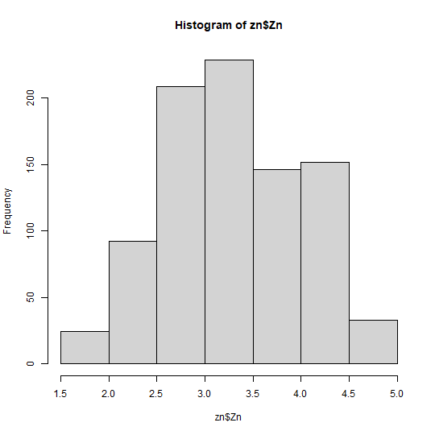
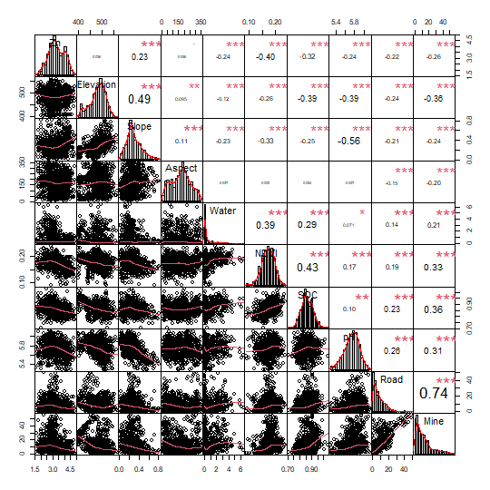
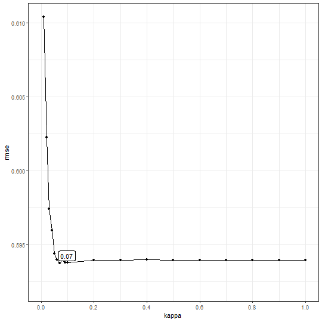
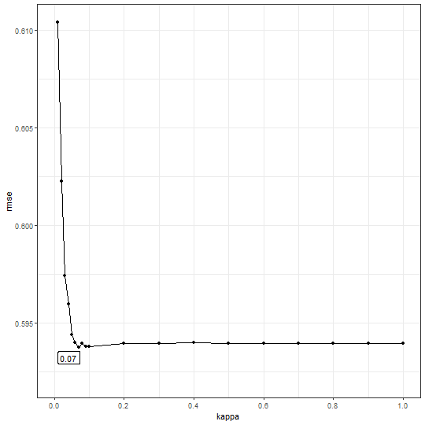
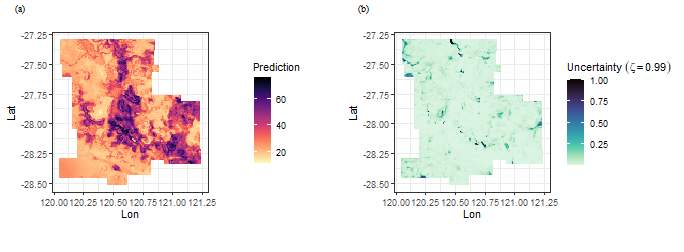

Geographically Optimal Similarity Model in R package spEcula
Wenbo Lv
Geographically-optimal-similarity.RmdGOS model

This vignette explains how to run a GOS model in
spEcula package.
Schematic overview of geographically optimal similarity (GOS) model
Load data and package
use zn data to train the gos model,use
grid data to predict.
| Name | zn |
| Number of rows | 885 |
| Number of columns | 12 |
| _______________________ | |
| Column type frequency: | |
| numeric | 12 |
| ________________________ | |
| Group variables | None |
Variable type: numeric
| skim_variable | n_missing | complete_rate | mean | sd | p0 | p25 | p50 | p75 | p100 | hist |
|---|---|---|---|---|---|---|---|---|---|---|
| Lon | 0 | 1 | 120.59 | 0.27 | 120.05 | 120.41 | 120.55 | 120.76 | 121.23 | ▃▇▇▃▃ |
| Lat | 0 | 1 | -27.94 | 0.30 | -28.52 | -28.17 | -27.98 | -27.75 | -27.29 | ▅▆▇▃▃ |
| Zn | 0 | 1 | 41.64 | 32.95 | 5.00 | 18.00 | 29.00 | 58.00 | 181.00 | ▇▂▂▁▁ |
| Elevation | 0 | 1 | 481.54 | 34.70 | 398.89 | 462.64 | 485.56 | 507.04 | 562.99 | ▂▃▇▇▁ |
| Slope | 0 | 1 | 0.30 | 0.15 | 0.01 | 0.20 | 0.27 | 0.39 | 0.81 | ▃▇▃▂▁ |
| Aspect | 0 | 1 | 170.97 | 86.06 | 4.88 | 100.28 | 176.51 | 230.21 | 352.60 | ▅▅▇▅▃ |
| Water | 0 | 1 | 0.67 | 1.06 | 0.00 | 0.05 | 0.15 | 0.80 | 6.41 | ▇▁▁▁▁ |
| NDVI | 0 | 1 | 0.17 | 0.02 | 0.09 | 0.16 | 0.17 | 0.19 | 0.24 | ▁▂▇▆▁ |
| SOC | 0 | 1 | 0.86 | 0.05 | 0.71 | 0.83 | 0.86 | 0.90 | 1.03 | ▁▅▇▃▁ |
| pH | 0 | 1 | 5.73 | 0.17 | 5.28 | 5.63 | 5.75 | 5.85 | 6.12 | ▂▃▇▇▂ |
| Road | 0 | 1 | 8.30 | 8.17 | 0.01 | 2.27 | 6.14 | 12.03 | 49.39 | ▇▃▁▁▁ |
| Mine | 0 | 1 | 12.66 | 11.78 | 0.05 | 3.90 | 9.09 | 17.60 | 55.60 | ▇▃▁▁▁ |
skimr::skim(grid)| Name | grid |
| Number of rows | 13132 |
| Number of columns | 12 |
| _______________________ | |
| Column type frequency: | |
| numeric | 12 |
| ________________________ | |
| Group variables | None |
Variable type: numeric
| skim_variable | n_missing | complete_rate | mean | sd | p0 | p25 | p50 | p75 | p100 | hist |
|---|---|---|---|---|---|---|---|---|---|---|
| GridID | 0 | 1 | 6566.50 | 3791.03 | 1.00 | 3283.75 | 6566.50 | 9849.25 | 13132.00 | ▇▇▇▇▇ |
| Lon | 0 | 1 | 120.59 | 0.30 | 120.05 | 120.35 | 120.57 | 120.80 | 121.24 | ▆▇▇▅▃ |
| Lat | 0 | 1 | -27.91 | 0.33 | -28.51 | -28.19 | -27.93 | -27.63 | -27.30 | ▆▇▇▆▆ |
| Elevation | 0 | 1 | 482.70 | 36.70 | 398.05 | 463.23 | 485.13 | 508.37 | 588.65 | ▂▅▇▃▁ |
| Slope | 0 | 1 | 0.28 | 0.16 | 0.01 | 0.17 | 0.25 | 0.35 | 1.71 | ▇▂▁▁▁ |
| Aspect | 0 | 1 | 171.65 | 90.58 | 0.75 | 94.81 | 174.13 | 236.72 | 358.71 | ▅▆▇▆▃ |
| Water | 0 | 1 | 1.11 | 1.19 | 0.00 | 0.26 | 0.65 | 1.60 | 7.70 | ▇▂▁▁▁ |
| NDVI | 0 | 1 | 0.18 | 0.02 | 0.06 | 0.16 | 0.18 | 0.19 | 0.25 | ▁▁▆▇▁ |
| SOC | 0 | 1 | 0.87 | 0.05 | 0.69 | 0.83 | 0.87 | 0.91 | 1.07 | ▁▅▇▃▁ |
| pH | 0 | 1 | 5.74 | 0.18 | 5.11 | 5.63 | 5.75 | 5.87 | 6.18 | ▁▂▇▇▂ |
| Road | 0 | 1 | 9.82 | 8.36 | 0.00 | 3.31 | 7.95 | 14.21 | 50.14 | ▇▅▁▁▁ |
| Mine | 0 | 1 | 14.79 | 12.12 | 0.02 | 5.54 | 11.43 | 19.85 | 56.64 | ▇▅▂▁▁ |
Data pre-processing and variable selection
We will use the zn data and grid data o
predict Zn in the scope of grid data.
From above,we can see that zn variable in
Zn data is skewed (right skewed),so Let’s do a normality
test on it.
moments::skewness(zn$Zn)
## [1] 1.414892
shapiro.test(zn$Zn)
##
## Shapiro-Wilk normality test
##
## data: zn$Zn
## W = 0.84834, p-value < 2.2e-16The Shapiro-Wilk normality test with a \(\text{p-value} < 2.2e-16 << 0.05\)
and W value of \(0.84834\), we can
conclude with high confidence that zn variable in
Zn data does not follow a normal distribution.
Now,we transform the zn variable in Zn
data,here I use Power Transform method.(ps: you can also
use a log-transformation). Power Transform uses the maximum
likelihood-like approach of Box and Cox (1964) to select a
transformation of a univariate or multivariate response for
normality. First we have to calculate appropriate transformation
parameters using powerTransform() function of
car package and then use this parameter to transform the
data using bcPower() function.
lambdapt = car::powerTransform(zn$Zn)
lambdapt
## Estimated transformation parameter
## zn$Zn
## -0.02447525
zn$Zn = car::bcPower(zn$Zn,lambdapt$lambda)Now, let’s see the transformed zn variable in
Zn data and see the skewness:
hist(zn$Zn)
moments::skewness(zn$Zn)
## [1] 0.004367706All right, let’s move on to the next step to see variable correlation:
PerformanceAnalytics::chart.Correlation(zn[, c(3:12)],pch = 19)
and test multicollinearity use vif:
m1 = lm(Zn ~ Slope + Water + NDVI + SOC + pH + Road + Mine, data = zn)
car::vif(m1)
## Slope Water NDVI SOC pH Road Mine
## 1.651039 1.232454 1.459539 1.355824 1.568347 2.273387 2.608347In this step, the selected variables include Slope, Water, NDVI, SOC, pH, Road, and Mine.
Determining the optimal similarity
tictoc::tic()
b1 = gos_bestkappa(Zn ~ Slope + Water + NDVI + SOC + pH + Road + Mine,
data = zn,kappa = c(seq(0.01, 0.1, 0.01), seq(0.2, 1, 0.1)),
nrepeat = 10,nsplit = .8,cores = 1)
tictoc::toc()
## 31.12 sec elapsed
b1$bestkappa
## [1] 0.07
b1$cvmean
## # A tibble: 19 × 2
## kappa rmse
## <dbl> <dbl>
## 1 0.01 0.610
## 2 0.02 0.602
## 3 0.03 0.597
## 4 0.04 0.596
## 5 0.05 0.594
## 6 0.06 0.594
## 7 0.07 0.594
## 8 0.08 0.594
## 9 0.09 0.594
## 10 0.1 0.594
## 11 0.2 0.594
## 12 0.3 0.594
## 13 0.4 0.594
## 14 0.5 0.594
## 15 0.6 0.594
## 16 0.7 0.594
## 17 0.8 0.594
## 18 0.9 0.594
## 19 1 0.594
b1$plot
You can set more optional numbers to the kappa vector
and a higher value of the cross-validation repeat times
nrepeat with a multi-core parallel(set cores
bigger).
tictoc::tic()
b2 = gos_bestkappa(Zn ~ Slope + Water + NDVI + SOC + pH + Road + Mine,
data = zn,kappa = c(seq(0.01, 0.1, 0.01), seq(0.2, 1, 0.1)),
nrepeat = 10,nsplit = .8,cores = 6)
tictoc::toc()
## 10.05 sec elapsed
b2$bestkappa
## [1] 0.07
b2$cvmean
## # A tibble: 19 × 2
## kappa rmse
## <dbl> <dbl>
## 1 0.01 0.610
## 2 0.02 0.602
## 3 0.03 0.597
## 4 0.04 0.596
## 5 0.05 0.594
## 6 0.06 0.594
## 7 0.07 0.594
## 8 0.08 0.594
## 9 0.09 0.594
## 10 0.1 0.594
## 11 0.2 0.594
## 12 0.3 0.594
## 13 0.4 0.594
## 14 0.5 0.594
## 15 0.6 0.594
## 16 0.7 0.594
## 17 0.8 0.594
## 18 0.9 0.594
## 19 1 0.594
b2$plot
Spatial prediction use GOS model
tictoc::tic()
g = gos(Zn ~ Slope + Water + NDVI + SOC + pH + Road + Mine,
data = zn, newdata = grid, kappa = 0.07,cores = 6)
tictoc::toc()
## 10.9 sec elapsedback transformation using transformation parameters that have used Box-cos transformation
grid$pred = inverse_bcPower(g$pred,lambdapt$lambda)
grid$uc99 = g$`uncertainty99`show the result
library(cowplot)
f1 = ggplot(grid, aes(x = Lon, y = Lat, fill = pred)) +
geom_tile() +
scale_fill_viridis(option="magma", direction = -1) +
coord_equal() +
labs(fill='Prediction') +
theme_bw()
f2 = ggplot(grid, aes(x = Lon, y = Lat, fill = uc99)) +
geom_tile() +
scale_fill_viridis(option="mako", direction = -1) +
coord_equal() +
labs(fill=bquote(Uncertainty~(zeta==0.99))) +
theme_bw()
plot_grid(f1,f2,nrow = 1,label_fontfamily = 'serif',
labels = paste0('(',letters[1:2],')'),
label_fontface = 'plain',label_size = 10,
hjust = -1.5,align = 'hv') -> p
p